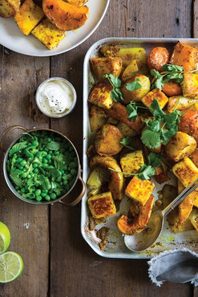
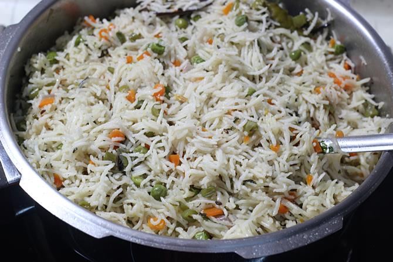
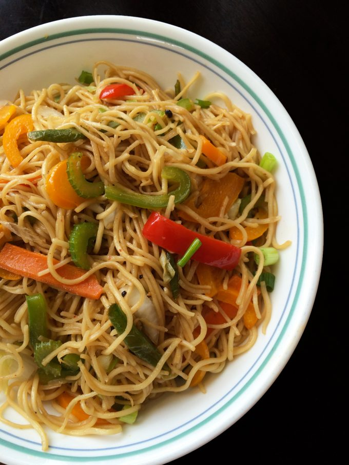

Paneer tikka masala is an Indian dish of marinated paneer cheese served in a
spiced gravy. It is a vegetarian alternative to chicken tikka masala.
Check out the recepie ->

Pilaf (US spelling), or pilau (UK spelling) is a rice dish, or
in some regions, a wheat dish, whose recipe usually involves cooking in stock or broth, adding spices, and other ingredients such as vegetables or meat,[1][note 1][2][note 2] and employing some technique for achieving cooked grains that do not adhere.[3][note 3][4][note 4]
At the time of the Abbasid Caliphate, such methods of cooking rice at first spread through a vast territory from India to Spain, and eventually to a wider world. The Spanish paella,[5][note 5] and the South Asian pilau or pulao,[6][note 6] and biryani,[7][note 7] evolved from such dishes.
Pilaf and similar dishes are common to Balkan, Caribbean, South Caucasian, Central Asian, East African, Eastern European, Latin American, Middle Eastern, and South Asian cuisines. It is a staple food and a popular dish in Afghanistan, Armenia, Azerbaijan, Bangladesh, China (notably in Xinjiang), Cyprus, Georgia, Greece (notably in Crete), India, Iraq (notably in Kurdistan), Iran, Israel,[8] Kazakhstan, Kenya , Kyrgyzstan, Nepal, Pakistan, Romania, Russia, Tanzania (notably in Zanzibar), Tajikistan,[9] Turkey,[10] Turkmenistan, Uganda, and Uzbekistan.[11][12]
Check out the recepie ->

Hakka cuisine, is the cooking style of the Hakka people, who may also be found in other parts of Taiwan and in countries with significant overseas Hakka communities.[1] There are numerous restaurants in Taiwan, Hong Kong, Indonesia, Malaysia, Singapore and Thailand serving Hakka cuisine. Hakka cuisine was listed in 2014 on the first Hong Kong Inventory of Intangible Cultural Heritage.[2]
The Hakka people have a marked cuisine and style of Chinese cooking which is little known outside the Hakka home. It concentrates on the texture of food – the hallmark of Hakka cuisine. Whereas preserved meats feature in Hakka delicacy, stewed, braised, roast meats – 'texturised' contributions to the Hakka palate – have a central place in their repertoire. Preserved vegetables (梅菜) are commonly used for steamed and braised dishes such as steamed minced pork with preserved vegetables and braised pork with salted vegetables. In fact, the raw materials for Hakka food are no different from raw materials for any other type of regional Chinese cuisine where what is cooked depends on what is available in the market. Hakka cuisine may be described as outwardly simple but tasty. The skill in Hakka cuisine lies in the ability to cook meat thoroughly without hardening it, and to naturally bring out the proteinous flavour (umami taste) of meat.
Check out the recepie ->
 Egg salad is a dish made primarily of chopped hard-boiled eggs and mayonnaise, often including other ingredients such as celery or mustard.
It is made mixed with seasonings in the form of herbs, spices and other ingredients, bound with mayonnaise. It is similar to chicken salad, crab salad, ham salad, lobster salad and tuna salad.[1] A typical egg salad is made of chopped hard-boiled eggs, mayonnaise, mustard, minced celery and onion, salt, black pepper and paprika. A common use for it as a filling for egg sandwiches. It is also often used as a topping for a green salad.[2]
Egg salad is a dish made primarily of chopped hard-boiled eggs and mayonnaise, often including other ingredients such as celery or mustard.
It is made mixed with seasonings in the form of herbs, spices and other ingredients, bound with mayonnaise. It is similar to chicken salad, crab salad, ham salad, lobster salad and tuna salad.[1] A typical egg salad is made of chopped hard-boiled eggs, mayonnaise, mustard, minced celery and onion, salt, black pepper and paprika. A common use for it as a filling for egg sandwiches. It is also often used as a topping for a green salad.[2]
Check out the recepie ->
 cold Coco Paneer Tikka Masala is a popular Indian curry where marinated
pieces of paneer are simmered in a tomato based creamy curry.
This dish goes extremely well with naan or paratha!
For making paneer tikka, we marinate the paneer pieces with yogurt and some
spices and then pan roast them before putting them in the curry.
For the masala, onions and tomatoes are cooked and then pureed.
The paneer pieces are finally added to the masala and served hot!
This Paneer Tikka Masala is so creamy & so good!
cold Coco Paneer Tikka Masala is a popular Indian curry where marinated
pieces of paneer are simmered in a tomato based creamy curry.
This dish goes extremely well with naan or paratha!
For making paneer tikka, we marinate the paneer pieces with yogurt and some
spices and then pan roast them before putting them in the curry.
For the masala, onions and tomatoes are cooked and then pureed.
The paneer pieces are finally added to the masala and served hot!
This Paneer Tikka Masala is so creamy & so good!
Check out the recepie ->